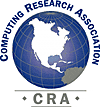

About CRA |
|
CRA
for Students |
|
CRA
for Faculty |
|
Events |
|
Jobs |
|
Government Affairs |
|
Computing Research Blog |
|
CRA-Women |
|
Projects |
|
Publications |
|
Data
& Resources |
|
Membership |
|
What's New |
|
Home |
|
1997-1998 Outstanding Undergraduate Award Winners
The Computing Research Association honors the reciepients of the 1997-1998 CRA Outstanding Undergraduate Awards competition, sponsored this year by Microsoft.
The awards were given in the two categories: the Outstanding Female Undergraduate award, which went to Karla Miller from the University of Illinois, and the Outstanding Male Undergraduate award, which went to Chris Olston from the University of California at Berkeley. Honorable Mention was given to the following:
Natasha Gelfand, Brown University
Sharon Goldwater, Brown University
Sarita James, Harvard University
Samjung Kim, Northwestern University
Robert Sumner, Georgia Institute of Technology
Jaime Teevan, Yale University
Omri Traub, Harvard University
Kevin Vlack, University of Illinois
This year the Selection Committee consisted of Janice Cuny of the University of Oregon, Tom Murtagh of Williams College, and Larry Snyder of the University of Washington.
About the Winners
Karla Miller is in her senior year at the University of Illinois at Urbana-Champaign, majoring in Computer Science. She was nominated for her research in medical imaging. Karla worked in the Magnetic Resonance Imaging Research Group at the University of California, San Diego Medical Center on a biophysical model for the changes in blood flow, blood volume, and blood oxygenation in the brain during activation. The model takes physiological parameters and predicts temporal patterns of the measured MR signal; Karla's research focused on the inverse calculation. She is currently working on automation of electron crystallography, using adaptive pattern techniques to predict high-resolution image quality based on crystal features. Karla received her department's Spyglass Award for Academic Achievement and the Franz Hohn and J. P. Nash Scholarship, an award established to recognize students with exceptional talent in scientific computing. She plans to attend graduate school at Stanford University.
Chris Olston is a junior in the EECS Department at UC Berkeley. He was nominated for his work with their database research group on Tioga DataSplash, a data visualization system. Chris extended the system with a graphical query tool that integrates a query language for generating SQL queries with the Tioga "what you see is what you get" drag and drop environment. Thus, he provided a seamless interface for both browsing and querying. He is now focusing on the "online" visualization of large datasets. Chris carries a 3.94 GPA and is a member of the Tau Beta Phi, Eta Kappa Nu, and Golden Key National Honor Societies.
|